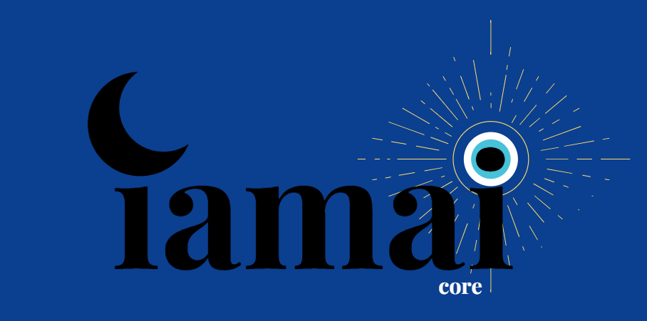

Explore IAMAI on GitHub
As a contributor to the open-source IAMAI project, I worked on Unity and Unreal integration for locally hosted AI behaviors. My focus was on ensuring low-latency communication between the engine and the AI core, optimizing API hooks, and creating reusable tools to simplify developer adoption. This project emphasized scalable plugin architecture and cross-engine support.